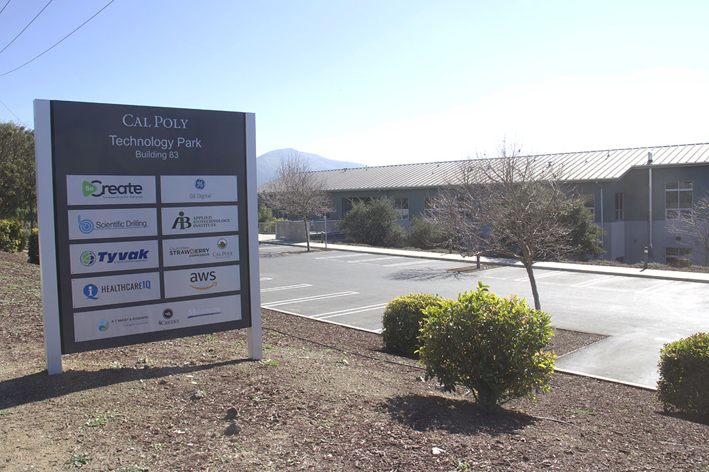
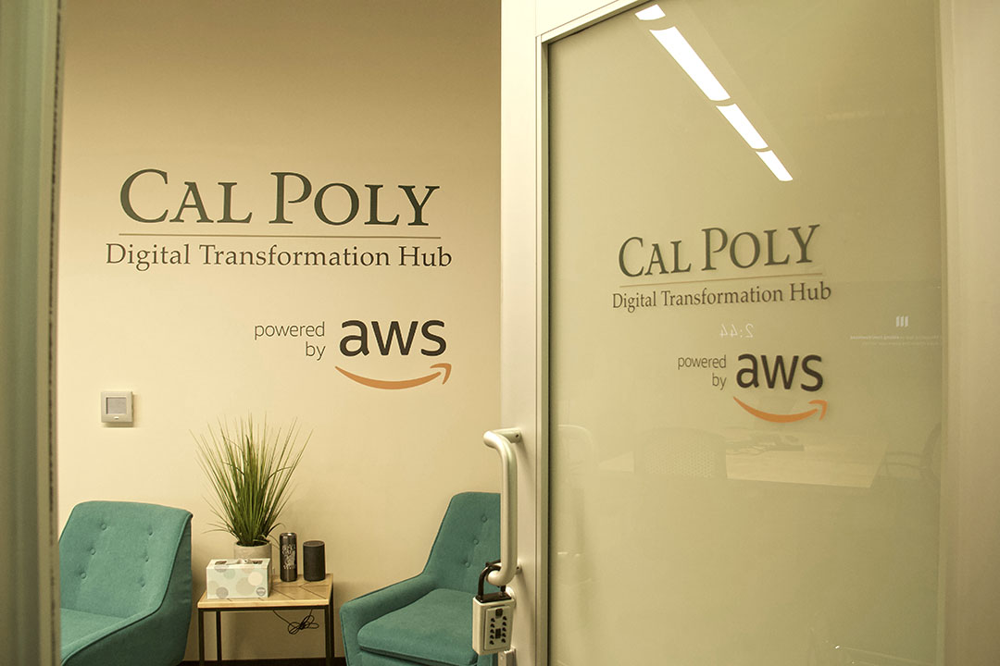
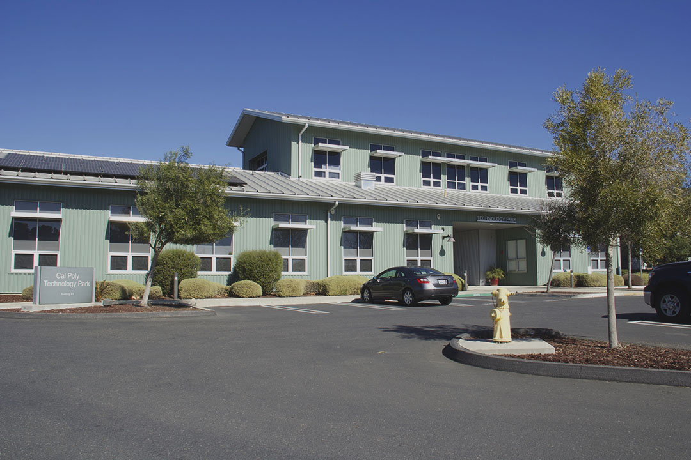
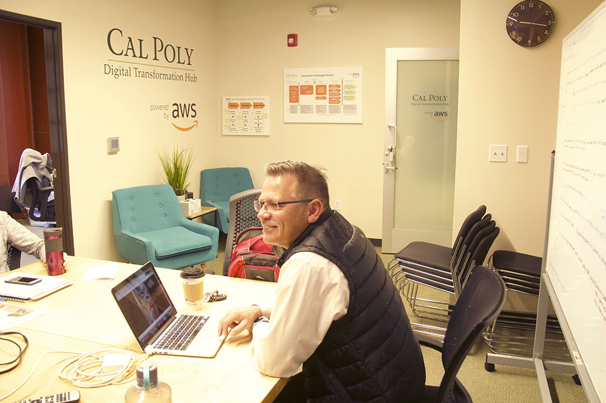
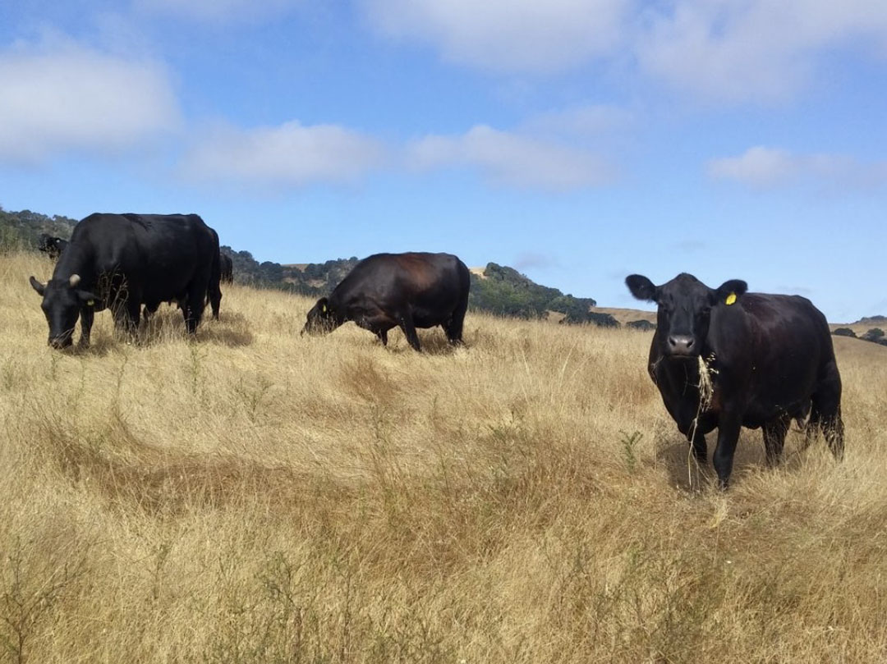
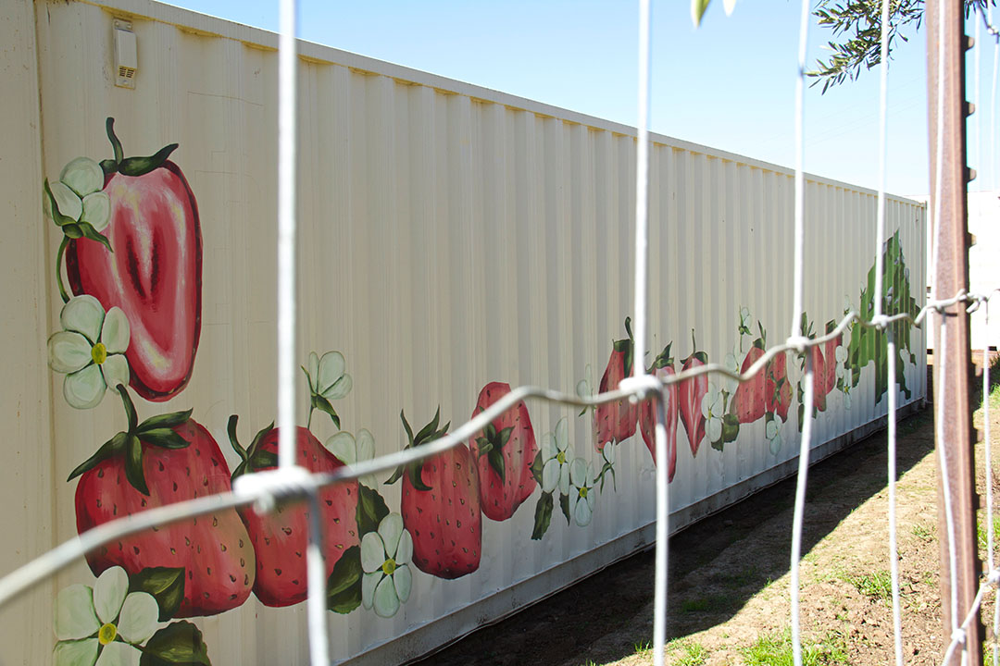
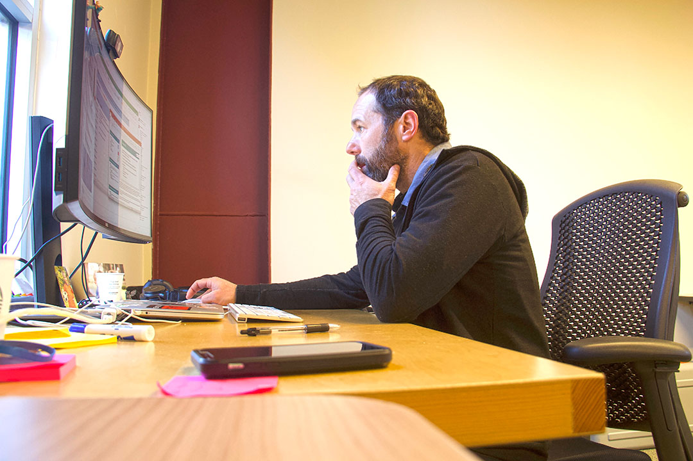
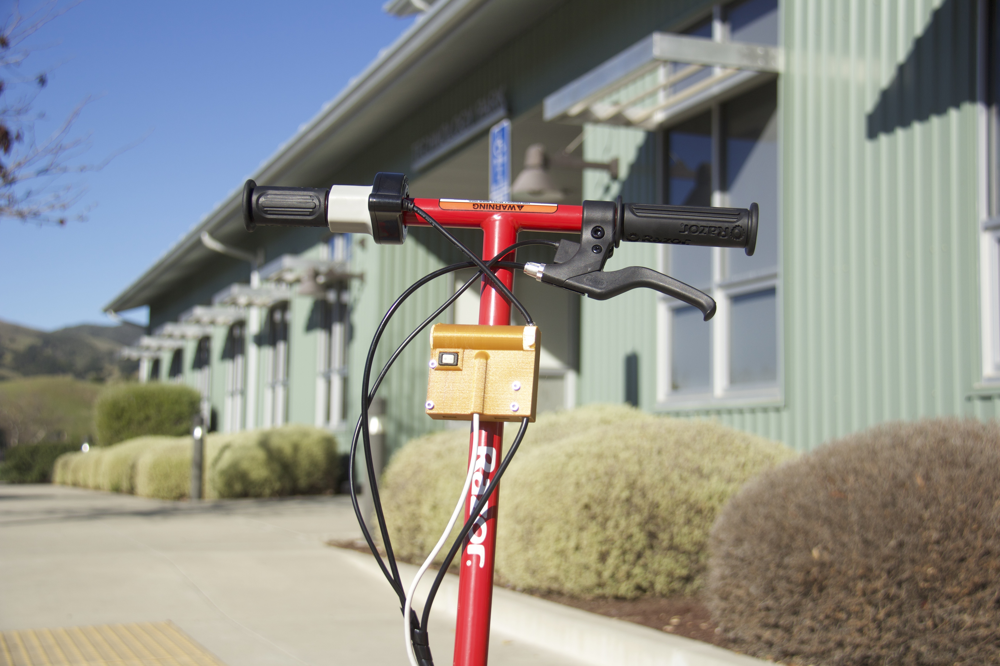
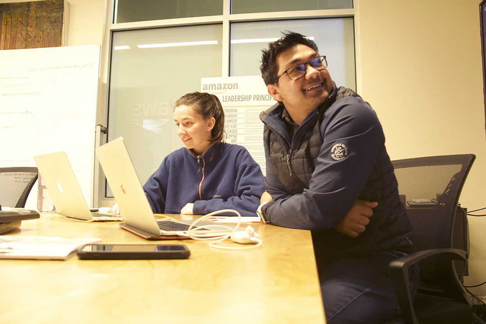

1 / 3

February 6th, 2020 / Cal Poly Technology Park |
The Cal Poly Technology Park, a multi-tenant building on Mt. Bishop and Highland Drive, plans on expanding by 150,000 square feet in the next 20 years. The Tech Park may be a mystery to some, but the complex was established back in 2010 by Cal Poly and the California Central Coast Research Partnership. It was built to foster collaboration between Cal Poly and firms on applied research projects ranging across multiple technological fields.
2 / 3

February 6th, 2020 / Digital Transformation Hub | The Cal Poly Digital Transformation Hub (DxHub) is a strategic relationship with Amazon Web Services (AWS) and is the world’s first cloud innovation center supported by AWS on a university campus. The primary goal of the DxHub is to provide real-world problem-solving experiences to students by immersing them within AWS innovation methods in combination with the latest technologies to solve important challenges or problems in the public sector.
3 / 10

February 9th, 2020 / Cal Poly Technology Park | Established back in 2017, the DxHub is doing what they can to put students in a position to solve real-world problems. The innovations coming out of the Hub and Cal Poly has the potential to translate to other institutions and companies around the world. Students now have access to an innovative process that is used by the multi-billion dollar company that is AWS.
4 / 10

February 11th, 2020 / Digital Transformation Hub | Inside the building sits Paul Jurasin, the Director at the DxHub, he and his team are committed to supporting "learn by doing" experiences for Cal Poly students while making an impact with the real-world solutions for the government, education, and non-profit community. “The DxHub has a tremendous opportunity to make a positive impact both here at Cal Poly and globally,” Jurasin said.
5 / 10

February 6th, 2020 / Across the street from the Cal Poly Technology Park | For example, in a partnership with Cal Poly DxHub, CAFES agricultural engineering and CENG engineering students and faculty recently developed a device that will improve the way ranchers track livestock on remote ranches. The team used Amazon’s Working Backwards methodology to develop a device that can track location and body temperature when worn around the animal’s neck. This device uses very little power and can communicate without the need for cellular connectivity, and as a result, the device can be worn for up to a year without maintenance. The technology allows ranchers to monitor an animal’s health and location throughout the year.
6 / 10

February 6th, 2020 / Cal Poly Technology Park | The California Strawberry Commission (also a resident at the Cal Poly Technology Park) represents more than 400 farmers, shippers, and processers in the strawberry industry. This collaboration set the goal of developing customized pest management plans for lygus bug infestations, based on farm location, weather patterns, and surrounding environmental factors. To strengthen grower adoption, the team determined that the technology solution would need to be accessible to all strawberry growers, regardless of technical skill and expertise.
7 / 10
February 11th, 2020 / Digital Transformation Hub
| Though Jurasin is the director of the DxHub, there are plenty of faces that you’d see coming in and out of the offices, from Cal Poly students and faculty to experts who work at the hub fulltime. You never know who you might end up sitting next to.
8 / 10

February 11th, 2020 / Digital Transformation Hub | Like Darren Kraker (shown above), who is the lead Cloud Solutions Development Manager at the DxHub. In his current role, he works with students and faculty to build lean prototypes using cloud technologies to demonstrate innovations. Kraker is currently focused on projects that involve machine learning and artificial intelligence. “There is no better feeling than seeing a student’s big idea come to fruition, that’s why I love my job,” Kraker said.
9 / 10

February 9th, 2020 / Cal Poly Technology Park
| The innovations coming out of the DxHub aren’t always directly correlated to problems in San Luis Obispo. The city of Santa Monica launched a pilot program to deploy dockless e-scooters throughout the area but didn’t know how to combat them being ridden on sidewalks. The team evaluated an approach to the issue, this involved using an accelerometer or inertial measurement unit (IMU) to classify differences in surface texture between sidewalks and roadways based on the distinctive difference in gaps of sidewalk concrete.
10 / 10

February 11th, 2020 / Digital Transformation Hub | (From left to right: Danielle Knell, Senior / Business Administration, and Yash Ranat, Senior / Business Administration) Ultimately, the main goal for the Digital Transformation Hub and Amazon Web Services is to provide college students with the necessary resources to fix the problems they see not only in their immediate environments, but around the world. “When I heard that I was hired as a student-employee at the DxHub, of course, I was excited to be working with Amazon Web Services, but I was more excited because it meant I get the chance to make a difference,” Ranat said.
❮
❯